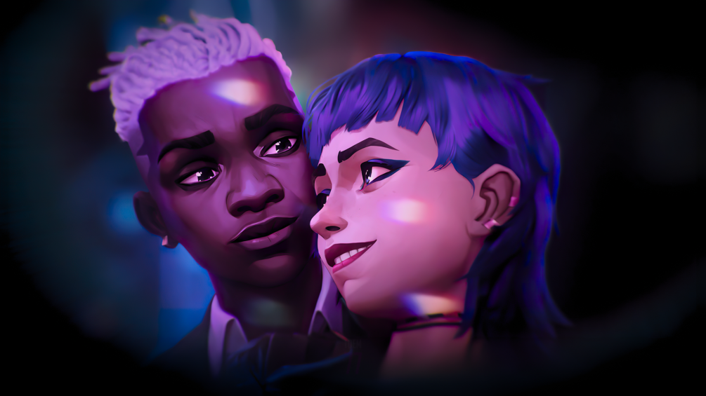
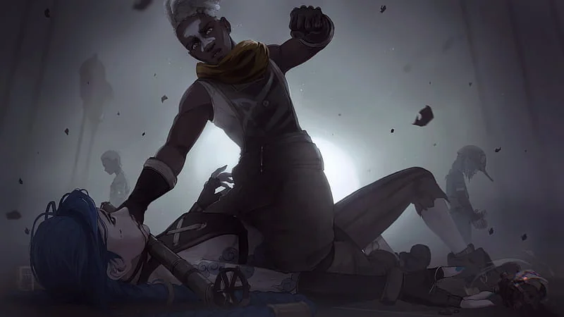

TRACK_66
Ce jour où je t'ai rencontrée...
"This is where my music lives..."
Sound as memory. Vision as emotion. This is the current that carries everything.
Ce jour où je t'ai rencontrée...


It carries fragments of moments we can never get back. Music frozen in time. Images that hold entire universes.
This is where emotion becomes tangible. Where memory becomes art.